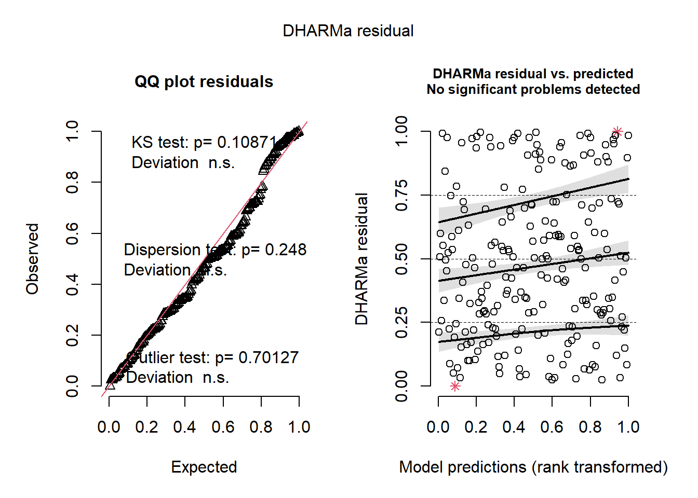

19 Diagnósticos con DHARMa
En este capítulo vamos mostrar el uso del paquete DHARMa de Hartig (2022) para explorar los residuales escalados (scaled residuals) obtenidos por medio de la función residuals. Al visitar este enlace se encontrará la página de apoyo del paquete, allí se puede consultar el manual de referencia.
Ejemplo: modelo gamma mixto
En este ejemplo vamos a simular observaciones \(n_i=50\) observaciones para \(G=10\) grupos (en total 500 obs) que tengan la estructura mostrada abajo. El objetivo del ejemplo es ilustrar el uso del paquete DHARMa para determinar entre dos modelos, el modelo fit1 será el modelo correcto mientras que el modelo fit0 será un modelo sin intercepto aleatorio.
\[\begin{align*} y_{ij} | b_0 &\sim Gamma(\mu_{ij}, \phi) \\ \log(\mu_{ij}) &= 2 - 8 x1_{ij} + 3 x2_{ij} + b_{0i} \\ \phi &= 0.5 \\ b_{0} &\sim N(0, \sigma^2_{b0}=9) \\ x1 &\sim U(0, 1) \\ x2 &\sim U(0, 1) \end{align*}\]
Lo primero es simular los datos. La función rgamma_glm sirve para simular observaciones \(Y\) con la parametrización gamma de los glm.
rgamma_glm <- function(n, mu, phi) {
x <- rgamma(n=n, shape=1/phi, scale=mu*phi)
return(x)
}
ni <- 15
G <- 15
nobs <- ni * G
grupo <- factor(rep(x=1:G, each=ni))
obs <- rep(x=1:ni, times=G)
set.seed(123)
x1 <- runif(n=nobs, min=0, max=1)
x2 <- runif(n=nobs, min=0, max=1)
set.seed(123)
b0 <- rnorm(n=G, mean=0, sd=sqrt(9)) # Intercepto aleatorio
b0 <- rep(x=b0, each=ni) # El mismo intercepto aleatorio pero repetido
media <- exp(2 - 8 * x1 + 3 * x2 + b0)
set.seed(123)
y <- rgamma_glm(n=nobs, mu=media, phi=0.5)
datos <- data.frame(obs, grupo, b0, x1, x2, media, y)A continuación se ajustan los dos modelos de interés.
library(glmmTMB)
fit0 <- glmmTMB(y ~ x1 + x2, family=Gamma(link="log"), data = datos)
fit1 <- glmmTMB(y ~ x1 + x2 + (1 | grupo), family=Gamma(link="log"), data = datos)Con el siguiente código se constuyen los gráficos de residuales para el modelo fit0.
library(DHARMa)## This is DHARMa 0.4.5. For overview type '?DHARMa'. For recent changes, type news(package = 'DHARMa')simulationOutput0 <- simulateResiduals(fittedModel = fit0, plot = F)
plot(simulationOutput0)De la figura anterior vemos que el valor-P de la prueba KS de normalidad (\(H_0:\) la muestra de residuos tiene distribución normal) es 0, lo que indica que hay evidencias para rechazar la normalidad de los errores. Eso implica que el modelo fit0 no es el modelo apropiado para los datos. Este resultado es correcto porque sabemos que fit0 no incluyó el intercepto aleatorio \(b_0\).
Con el siguiente código se constuyen los gráficos de residuales para el modelo fit1.
simulationOutput1 <- simulateResiduals(fittedModel = fit1, plot = F)
plot(simulationOutput1)
De la figura anterior vemos que el valor-P de la prueba KS de normalidad (\(H_0:\) la muestra de residuos tiene distribución normal) es 0.10871, lo que indica que hay NO hay evidencias para rechazar la normalidad de los errores. Eso implica que el modelo fit1 podría ser un modelo apropiado para los datos. Este resultado es correcto porque sabemos que fit1 tiene los elementos con los que se simularon los datos.